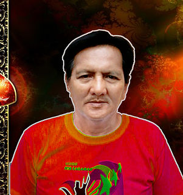
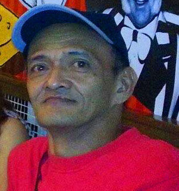
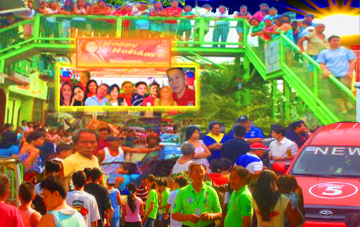
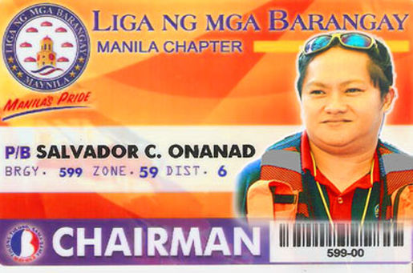

Kung ating babalikan ang panahon bago dumating ang Kastila (1521), mayroon ng mga barangay (villages) na binubuo ng mga tatlumpu (30) hanggang isang daang (100) pamilya at ito ay pinamumunuan ng "datu". Ang pinunong ito ang siyang humahawak ng lehislatibo, ehekutibo at judicial na kapangyarihan para sa kanyang pinanghahawakang barangay. Dumaan ang ibat-ibang pangulo ng Pilipinas, at nang dumating ang panahon ng dating Pangulong Ferdinand Marcos, lalong pinalakas ang barangayan. Ang pagtatalga ng mga namumuno ng barangay noon na kinalaunan ay tinawag na Kapitan de Barangay, ay hindi pa idinadaan sa halalan Sa barangay na ito, ang kauna-unahang Barangay Chairman ay isang babae, sa katauhan nng dating Kgg. Consolacion Lucas. Humigit-kumulang tatlumpu (30) lamang ang bilang ng pamilyang naninirahan sa lugar na ito ng Old Sta. Mesa, na ngayon ay Barangay 599 na. Nang magkaroon na ng regular na halalan para sa pagpapalit ng mamumuno, sinundan si Kgg. C. Lucas ni Kgg. Ramon Pascual, sumunod si Kgg. Wilfredo Tana, at dalawang beses na pamumuno ni Kgg. Benjamin Macalinao.
 Kung ating babalikan ang panahon bago dumating ang Kastila (1521), mayroon ng mga barangay (villages) na binubuo ng mga tatlumpu (30) hanggang isang daang (100) pamilya at ito ay pinamumunuan ng "datu". Ang pinunong ito ang siyang humahawak ng lehislatibo, ehekutibo at judicial na kapangyarihan para sa kanyang pinanghahawakang barangay. Dumaan ang ibat-ibang pangulo ng Pilipinas, at nang dumating ang panahon ng dating Pangulong Ferdinand Marcos, lalong pinalakas ang barangayan. Ang pagtatalga ng mga namumuno ng barangay noon na kinalaunan ay tinawag na Kapitan de Barangay, ay hindi pa idinadaan sa halalan Sa barangay na ito, ang kauna-unahang Barangay Chairman ay isang babae, sa katauhan nng dating Kgg. Consolacion Lucas. Humigit-kumulang tatlumpu (30) lamang ang bilang ng pamilyang naninirahan sa lugar na ito ng Old Sta. Mesa, na ngayon ay Barangay 599 na. Nang magkaroon na ng regular na halalan para sa pagpapalit ng mamumuno, sinundan si Kgg. C. Lucas ni Kgg. Ramon Pascual, sumunod si Kgg. Wilfredo Tana, at dalawang beses na pamumuno ni Kgg. Benjamin Macalinao. Sa panahon ng nasirang Brgy. Captain Ramon Pascual, nagkaroon ng proyektong pabahay ang gobyerno. Magmula sa pribadong lupa, isa ang Barangay 599 sa nakuha at pinamahalaan ng National Housing Authority upang mabahaginan ng sariling lupa ang mga naninirahan dito. Hindi nagtagal, nagdatingan ang mga maliliit na pamilya mula sa iba't ibang lugar ng Metro Manila at maging sa mga probinsya.
Taong 2000 hanggang 2013, sa magandang pamumuno at pamamahala ng dating Brgy. Captain Jose Milo Lacatan at sa tulong ng iba pang opisyal ng barangay na ito, ang Barangay 599 ay nakaroon ng maraming pagbabago tulad ng pagpapalawak ng mga palaruan ng mga bata, pagpapaganda ng barangay hall at barangay chapel, pagpapatayo ng "Welcome Marker Arch", Reading , Center, Day Care Center, pagkakaroon ng telepono, two-way radio, at public address na malaking tulong sa komunikasyo, maging ng sasakyan tulad ng tricycle at multicab, mga bulletin board at iba pa.
Sa lahat ng proyekto ng dating Chairman Jose Milo Lacatan, ang naging kontrobersyal ay ang hagdan ng barangay na ngayon ay tinatawag na “footbridge”. Ngunit ang pagtutol ng iilan ay napagtagumpayan ng mga mas nakararami na may totong malasakit sa kapakanana ng buong barangay, kung kaya’t nanatili hanggang ngayon ang hagdan na ito hangganga sa matapos ni P/B Jose Milo Lacatan ang kanyang termino.
October 28, 2013 ay ang tagumpay ni two-termer barangay kagawad Hon. Salvador “Buddy” Onanad na naupo bilang bagong Punong Barangay ng Brgy. 599. Unti-unti nyang isinagawa ang mga pagbabago na ilan sa mga ito ay ang barangay hall renovation and improvement, kasama ang Day Care Center at stage, Gender and Development Office, Senior Citizens' Quarter, Reading Center, at parking lot. Nilayon din niyang magkaroon ng ISCOM Learning Center na sa ngayon ay dumadaan pa sa proseso bago maumpisahan ito. Nagdagdag ng mga kagamitang magagamit sa mga di inaasahang sakuna at kalamidad katulad ng two-way radios, fire pump and hose, fire extinguishers, etc. mas pinadali ang pagbibigay ng serbisyo tulad ng mga barangay certificates, clearance, ID, at cedula.
Ngayong 2014, sa bagong pamumuno ni Chairman Salvador “Buddy” Onanad ay mas lalo pang pag-iibayuhin ng administrasyon ang kanilang serbisyo para sa mas ikauunlad ng barangay na ito. Ngunit mas bibilis ang pagsulong kung ang bawat mamamayan ay makiisa, makikibahagi, at makikilahok na may pagkukusang-loob sa lahat ng mga proyekto ng bagong konseho. Ang ikauunlad ng buong bansa ay sa maayos at tapat na barangay nagmumula.